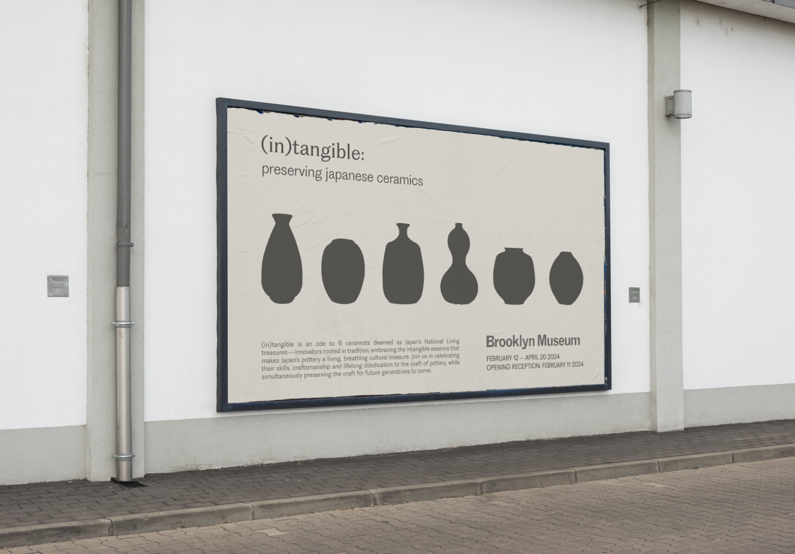
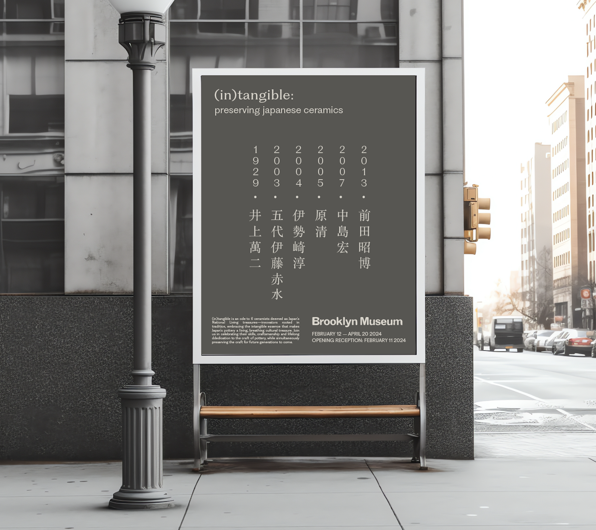

(in)tangible: preserving japanese ceramics
Category
Year
Software(s)
Project
Branding & Identity
2023
Adobe Illustrator, InDesign
(in)tangible is an fictional exhibition showcasing work by 6 ceramics deemed as Japan's National Living Treasures. Components include a printed exhibition catalog, posters, merchandise, website landing page design, and more.
*Note: this project was completed as part of CD Studio: Multiple Editions, Fall 2023, at the Parsons School of Design.
1. Concept and Identity
UNESCO defines Intangible Cultural Heritage as the practices, expressions, knowledge and skills that communities, groups and sometimes individuals recognise as part of their cultural heritage. Also called living cultural heritage, it is usually expressed in one of the following forms: oral traditions; performing arts; social practices, rituals and festive events; knowledge and practices concerning nature and the universe; and traditional craftsmanship.
(in)tangible is an ode to 6 ceramists deemed as Japan’s National Living treasures—innovators rooted in tradition, embracing the intangible essence that makes Japan’s pottery a living, breathing cultural treasure. Join us in celebrating the skills, craftsmanship and lifelong dedication to the craft of pottery of Inoue Manji, Yoshita Minori, Ito Sekisui V, Isezaki Jun, Hara Kiyoshi and Maeta Akihiro, whilst simultaneously playing a part in preserving the craft for future generations to come.
2. Exhibition Catalog

3. Posters


4. Retail/ Merchandise
5. Website Landing Page